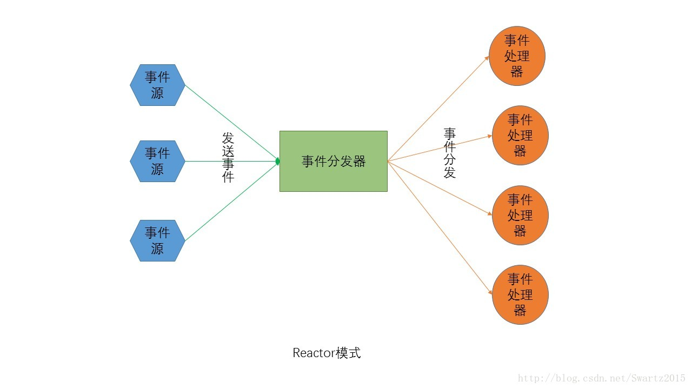

muduo架构解析
muduo是一个基于Reactor模式的C++网络库。它采用非阻塞I/O模型，基于事件驱动和回调。我们不仅可以通过muduo来学习linux服务端多线程编程，还可以通过它来学习C++11。
Reactor是网络编程的一般范式。我们这里从reactor模式为出发点，根据Reactor模式的特点剖析muduo的架构设计。根据wiki的定义：
The reactor design pattern is an event handling pattern for handling
service requests delivered concurrently to a service handler by one or
more inputs. The service handler then demultiplexes the incoming
requests and dispatches them synchronously to the associated request
handlers.
我们可以知道，Reactor模式的基础是事件驱动，事件源可以有多个，并且会并发地产生事件。Reactor模式的核心是一个事件分发器 和多个事件处理器，多个事件源向事件分发器发送事件，并要求事件分发器响应，reactor模式的设计难点也是在事件分发器，它必须能够有条不紊地把相应 事件分派到合适的事件处理器中，保证事件处理的最小延迟。事件处理器主要是负责处理事件的业务逻辑，这是关系到具体事件的核心，因此和事件分发器不一样， 它并不太具有一般性。

Reactor模式的特点可以很自然地应用到C/S架构中。在C/S架构的应用程序中，多个客户端会同时向服务端发送request请求。 服务端接收请求，并根据请求内容处理请求，最后向客户端发送请求结果。这里，客户端就相当于事件源，服务端由事件分发器和事件处理器组成。分发器的任务主 要是解析请求和将解析后的请求发送到具体的事件处理器中。
从技术的层面来说，怎么把“事件”这个概念放到“请求”上，也就是怎么样使得请求到来可以触发事件，是一个难点。从设计的层面上来说，怎么
样分发事件使得响应延迟最小，并保持高可扩展性是难点(架构能够较好地适应各种事件的处理和事件数量的变化)。对于技术层面，linux上的解决方案
是：epoll，select等。而设计层面，muduo提供了较好的解决方案。
Muduo的基础设施是epoll，并在此基础上实现了one-thread-one-loop和thread-pool设计方案。也就是将事件
处理器设置成线程池，每个线程对应一个事件处理器；因为事件处理器主要处理的是I/O事件，而且每个事件处理器可能会处理一个连接上的多个I/O事件，而
不是处理完一个事件后直接断开，因此muduo选择每个事件处理器一个event-loop。这样，连接建立后，对于这条连接上的所有事件全权由它的事件
处理器在event-loop中处理。
我们可以根据上面的reactor架构图，简单地绘制出muduo的架构图：
如图所示，客户端首先和服务端建立连接，如图橙色线所示。建立连接之后将这个连接分发到具体的Eventloopthread中(所有的
eventloopthread由server中的一个eventloopthreadpool线程池管理)，这部分主要由server中的
Acceptor完成。后续client就不再和Acceptor发生关系了。因此可以看出，建立连接之后，client直接和
Eventloopthread关联，不再经过Acceptor。
由于连接本身也是一个事件，因此Acceptor的工作是等待事件和分发事件，因此它也是在一个eventloop中。
下面我们看一下Tcpserver类成员，其实类中的*loop_指向的其实就是Acceptor所在的eventloop。因此
Acceptor的eventloop并不是存在于eventloopthreadpool中的。不过后面我们会看到，这个eventloop结构也是会
传入到eventloopthreadpool结构中，由eventloopthreadpool的baseloop标识，这主要是为了管理server
中的所有eventloop方便。
至此我们便介绍完了muduo中的Tcpserver架构。后面我们将从此展开，深入到具体细节中。比如怎么管理 eventloopthread，建立好的连接怎么放入到eventloopthread中，以及eventloopthread怎么管理和客户端直接的 I/O连接，eventloop怎么管理各个事件的处理逻辑等等。最后我们还将介绍muduo实现的一些架构之外的技术细节，比如缓冲区管理，日志系统， 定时器管理等等。
muduo库整体架构简析2
muduo 是一个高质量的Reactor网络库，采用one loop per thread + thread pool架构实现，代码简洁，逻辑清晰，是学习网络编程的很好的典范。
muduo的代码分为两部分，base和net，base部分实现一些基础功 能，例如log, thread, threadpool, mutex, queue 等，这些基础模块在后面网络库中很多地方都可以复用， base库的类相互之间耦合性较低，源码阅读起来并不困难，此处不做过多探究。
net部分使用base中的工具类实现更高层次的逻辑，网络编程无非是对 socket和其使用的epoll/poll等进行封装，使其便于使用，屏蔽掉底层网络库的一些 "坑", 在满足了基础的网络IO之后，就需要考虑高性能，高并发的问题，muduo 的是由poll/epoll 这些异步IO构成，但是单个IO线程在面对大量请求时难免处理不过来，所以就需要结合多线程或者线程池，一个线程对应一个epoll进行网络IO，这样就 可以充分利用硬件多核系统。从软硬两方面综合提升性能。net部分封装的较为彻底，对上层提供的接口简单易用，所以涉及复杂的内部处理，接下来就对其内部 实现进行探究。
下面这张图是陈硕提供的muduo 网络库的类图，本次讲解主要是围绕下面这张图，弄明白这样就相当于弄明白这个架构了。（图中灰色的类是内部类，白色的是外部类）
首先是EvenLoop类，他是事件循环（反应器 Reactor），每个线程只能有一个 EventLoop 实体，它负责 IO 和定时器事件的分派。 它用 TimerQueue 作为计时器管理，用 Poller 作为 IO Multiplexing。TimeQueue底层使用timerfd_*系列函数将定时器转换为fd添加到事件循环中，当时间到达后就会自动触发事件， 其内部使用 set 管理一些注册好的Timer，由于set有自动排序功能，所以注册到事件循环的总是第一个需要处理的Timer。Poller是IO mutiplexing的实现，它是一个抽象类，具体实现由其子类PollPoller (封装poll)， EpollPoller (封装epoll) 实现，这是muduo库中唯一一个用面向对象的思想实现的，通过虚函数提供回调功能。Poll中的updateChannel方法用于注册和更新关注的事 件，所有的 fd 都需要调用它添加到事件循环中。 除了用TiemQueue和Poller管理时间事件和IO事件外，EvenLoop还包含一个任务队列，它用来做一些计算任务，你可以将自己的任务添加 到任务队列中，EvenLoop在一次事件循环中处理完IO事件就会进行依次取出这些任务进行执行，这样当多个线程需要处理同一资源时可以减少锁的复杂 性， 将资源的管理固定地交由一个线程来处理，其他线程对资源的处理只需要添加到该线程的任务队列中，由该线程异步执行， 如此只需要在任务队列加锁即可，其他地方无需上锁，减少锁的滥用。 但是有一个问题，如果EvenLoop阻塞在epoll_wait处就无法处理这些计算任务了，毕竟计算任务是在处理完IO事件后才执行的，所以此时需要 通过某种通信方式唤醒该线程，被唤醒后就取出队列中的任务进行执行。muduo采用 eventfd(2) 来异步唤醒。
muduo中通过Channel对fd 进行封装，其实更合适的说法是对fd事件相关方法的封装，例如负责注册fd的可读或可写事件到EvenLoop，又如fd产生事件后要如何响应。 一个fd对应一个channel, 它们是聚合关系，Channel在析构函数中并不会close掉这个fd。 它有一个handleEvent方法，当该fd有事件产生时EvenLoop会调用handleEvent方法进行处理，在handleEvent内部根 据可读或可写事件调用不同的回调函数（回调函数可事先注册）。 它一般做为其他类的成员，例如EvenLoop通过一个vector<Channel*> 对注册到其内的众多fd的管理，毕竟有 了Channel就有了fd及其对应的事件处理方法，所以你会看到上图中EvenLoop与Channel是一对多的关系。
Socket也是对fd的封装，但不同与channel, 它仅封装 ::socket 产生的fd, 并且提供的方法也是一些获取或设置网络连接属性的方法，他和 fd 是组合关系，当Socke析构时会close掉这个fd。不管如何封装fd， 一些系统函数传递的参数总是fd，所以你会看到上图中一些类中既有 fd 又有Channel或Socket, 这也是在所难免的。
TcpConection是对一个连接的抽象，一个TcpConnection 包含一个Socket和一个Channel, 上面说到channel::handleEvent会在产生事件后调用事先注册的回调函数，其实在TcpConnection构造的时候就会 为其所属的Channel注册好这些回调函数，handleRead,handleWrite....分别对应可读可写事件产生后调用的回调函数。事件产 生后会调用handleRead(或handleWrite), TcpConceton会在handleRead中做一些处理，然后转交给上层，提交到上层的具体体现就是调用上层注册的回调函数（又是一样的套路 😊），因为Channel是个内部类，所以它的回调函数的注册只能TcpConnection完成，上层只需要将回调函数注册到 TcpConnection后其会自动处理。之所以加了TcpConnection这一层是为了解决Tcp协议收发数据时阻塞问题，比如::write时 内核缓冲区满了，只能等到下次EPOLLOUT事件产生后再写，对于一个牛逼的网络库来说，应该是上层只需调用一次sendMessage发送全部数据， 网络库内部将数据分批::write给peer， TcpConnection就实现了这一点，它内部维护一个应用层的inputBuffer和outputBuffer保证数据的可靠发送，同时再连接断 开时也能保证数据发送完成后再断开。
Acceptor用来接受连接，其内是维护一个listenfd及其对应的 channel， 他会对listenfd进行一些初始化操作例如::bind, ::listen，然后就调用channel的方法注册到事件循环中，事件产生后回调其handleRead进行accept连接，然后调用上层注册的 newConnectonCallback回调函数。Acceptor是个内部类它属于一个TcpServer, Acceptor::newConnectionCallback的实例就是由TcpServer进行注册的， 连接产生后TcpServer主要对这个连接创建一个TcpConnection对象并设置好其对应的回调函数，TcpServer维护一个 TcpConnection的map来管理连接到他的client, TcpSever通过线程池来处理并发请求，线程池内是多个IO线程也就是多个EvenLoop，每个连接到来回自动分配到其中一个来创建 TcpConnection相关。这样就大大提高了TcpServer的请求处理能力！
我的补充
P135中：muduo的线程模型符合我主张的one loop per thread + thread pool 模型。每个线程最多有一个EventLoop，每个TcpConnection必须归某个 EventLoop管理，所有的IO会转移到这个线程。换句话说，一个file descriptor只能由一个线程读写。TcpConnection所在的线程由其所属的EventLoop 决定，这样我们可以很方便的地把不同的TCP连接放到不同的线程去，也可以把一些TCP连接放到一个线程里。TcpConnection和EventLoop是线程安全的，可以跨线程调用。
TcpServer直接支持多线程，它有两种模式：
单线程，accept(2)与TcpConnetion用同一个线程做IO。
多线程，accept(2)与EventLoop在同一个线程，另外创建一个EventLoopThreadPool，新到的连接会按round-robin方式分配到线程池中。